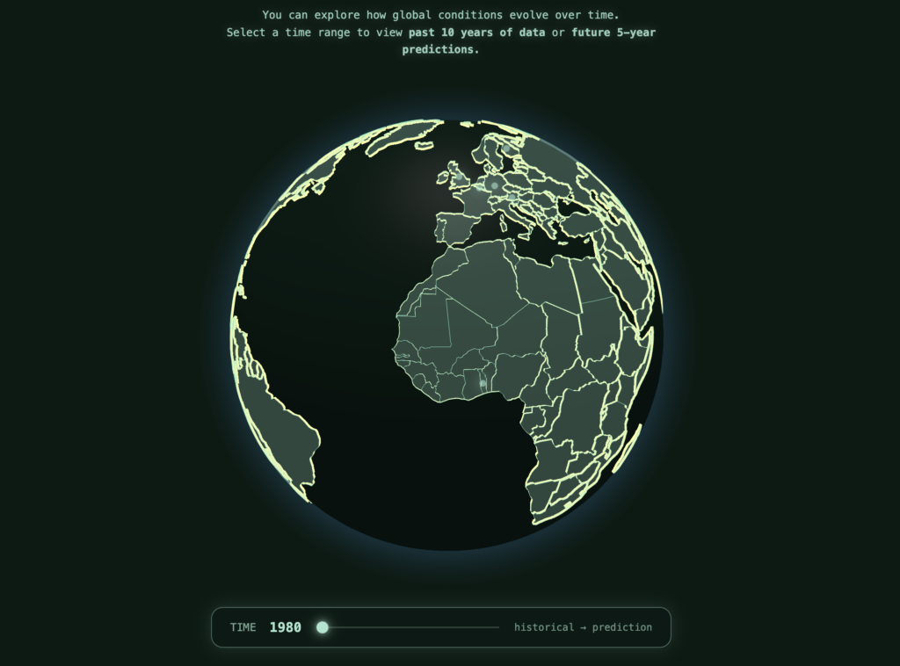
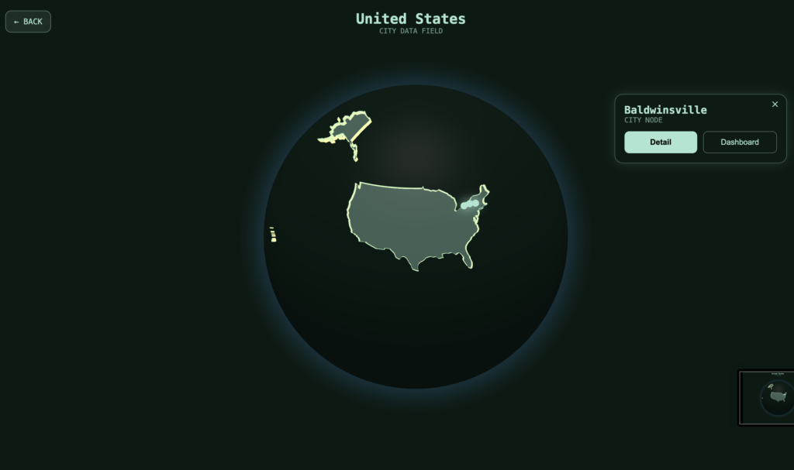

The final stage of the TeleAgriculture project involved translating key parts of the UI/UX design system from Figma into a working React-based web prototype. After presenting our Figma prototype to Julian and discussing the concept direction, we agreed to focus on developing the Earth visualisation component as a functional interactive prototype, as it represents the core entry point of the entire system and the most important spatial interaction layer. This step was essential in moving from static design exploration to an actual interactive implementation that reflects how users would engage with the platform in practice.
1. Project Structure (React Implementation)
globe-app/
│
├── src/
│ │
│ ├── App.jsx
│ │ └── Root component
│ │ ├── Manages routing / navigation
│ │ ├── Controls global state (selected country / region)
│ │ └── Switches between GlobeView & CountryPage
│ │
│ ├── GlobeView.js
│ │ └── Main Earth Visualisation Component
│ │ ├── Interactive globe / world view
│ │ ├── Clickable country nodes
│ │ └── Entry point of spatial exploration
│ │
│ ├── CountryPage.js
│ │ └── Drill-down Data View
│ │ ├── Country-level environmental data
│ │ ├── Sensor / agricultural metrics
│ │ └── Detailed dashboard display
│ │
│ ├── data.js
│ │ └── Mock Data Layer
│ │ ├── Geographic dataset
│ │ ├── Sensor values (temp, humidity, gas)
│ │ └── Simulated TeleAgriCulture database
│ │
│ ├── index.css
│ │ └── Global Styling System
│ │ ├── Colour palette implementation
│ │ ├── Layout + UI styling
│ │ └── Responsive design rules
│ │
│ ├── App.test.js
│ │ └── Basic testing scaffold
│ │ ├── Component stability checks
│ │ └── Future testing expansion
│ │
│ └── (index.js / main entry - implied)
│
└── Project Logic Flow
World (GlobeView)
↓
Country Selection
↓
CountryPage (Data Dashboard)
↓
data.js (Mock dataset feeding UI)The React prototype was organised into a clear and modular file structure to support scalability and separation of concerns. Each file was responsible for a specific part of the TeleAgriculture Earth visualisation system:
- App.jsx
Acts as the root component of the application. It manages the overall routing logic and controls the switching between the Globe view and Country-level detail pages. It also handles global state for selected geographic regions. - GlobeView.js
This is the core visualisation component of the project. It renders the interactive Earth interface, including the 3D/visual globe representation and clickable country or region nodes. It represents the main entry point of the system’s spatial exploration flow. - CountryPage.js
Responsible for the drill-down interaction layer. When a user selects a country from the globe, this component displays detailed environmental and agricultural data for that region, continuing the hierarchical data structure (World → Country → City → Data). - data.js
Contains structured mock datasets used throughout the application. This includes geographic information, sensor values, and environmental metrics. It acts as a temporary data layer simulating real TeleAgriculture database integration. - index.css
Defines the global styling system for the prototype. It includes layout rules, colour definitions aligned with the TeleAgriculture design system, and responsive UI styling for both globe and dashboard components. - App.test.js
Provides basic testing scaffolding for the application. Although minimal, it was included to support component stability checks and future scalability for automated testing workflows.
2. Core Technologies Used
The prototype was developed using the following technologies and libraries:
React Ecosystem
- React.js – core framework for building UI components
- react-router-dom – enables multi-page navigation (Globe → Country → Detail)
- React Hooks (useState, useEffect, useRef) – state management and lifecycle control
3D Globe & Visualization
- react-globe.gl
- Main library used for rendering the interactive 3D Earth
- Built on top of Three.js
- Supports polygons, markers, and HTML overlay elements
- three.js
- Provides WebGL-based rendering engine
- Used for material control and lighting (MeshPhongMaterial)
- Enables realistic globe shading and dark environmental tone
- topojson-client
- Used to convert TopoJSON world map data into usable GeoJSON format
- Enables rendering of real-world country boundaries
Data Handling
- Custom
data.jsfile acts as a lightweight mock database - Stores:
- Country codes (AT, DE, US, etc.)
- City-level geolocation data (lat/lng)
- Hierarchical mapping structure for drill-down interaction
3. Interaction Logic
The system implements a three-level hierarchical navigation model:
Level 1: Global View (GlobeView.js)
- Displays an interactive rotating globe
- Countries are rendered as polygon overlays
- Users can click a country to trigger a popup
- Uses
autoRotatefor continuous motion (ambient interaction)
Level 2: Country View (CountryPage.js)
- Zooms into selected country using
pointOfView() - Displays country boundary + city-level nodes
- Each city is an interactive HTML marker
- Clicking a city opens a data popup panel
Level 3: City Data Layer
- Shows environmental dataset preview (temperature, humidity, gas, etc.)
- Supports navigation to future “dashboard” view (planned extension)
This structure directly reflects the original design concept:
World → Country → City → Data
4. Key Interaction Features
Globe Interaction
- Clickable country polygons
- Animated camera transitions
- Auto-rotating Earth for ambient motion
City Nodes
- HTML-based markers rendered on globe surface
- Glow and pulse effects using dynamic styling
- Click event triggers state update (
setSelectedCity)
Popup System
- Glassmorphism-style UI panels
- Displays contextual metadata per location
- Includes navigation buttons (Detail / Dashboard)
Routing System
/→ GlobeView (global exploration)/country/:code→ CountryPage (drill-down view)
5. Styling & Visual System
The visual system is controlled through CSS and inline styling:
- Dark ecological background:
#0A1A14 - Primary accent color:
#A8E6CF(mint green glow) - Glassmorphism UI panels (blur + transparency)
- Glowing marker animation using:
box-shadowkeyframe pulse animation
- Custom slider styling for time control (future expansion)
6. Data Flow Logic
The system follows a simple but structured data flow:
- User interacts with globe (country click)
- Country code is extracted via mapping table
- React Router navigates to
/country/:code CountryPage.jsloads relevant dataset fromdata.js- Cities are rendered as interactive nodes
- User selects city → popup displays environmental data
This creates a progressive disclosure system, ensuring users only see data relevant to their current zoom level.
7. Key Plugins / Dependencies Summary
reactreact-domreact-router-domreact-globe.glthreetopojson-client
These libraries together enabled:
- 3D globe rendering
- geospatial data mapping
- interactive navigation system
- component-based routing structure
8. Technical Outcome
The final prototype successfully demonstrates:
- A functional interactive geospatial data system
- A working drill-down navigation model
- Real-time 3D globe interaction using WebGL
- A scalable structure for future expansion into:
- dashboard analytics
- live sensor data integration
- agricultural IoT system visualization
This technical stage bridges the gap between conceptual UI design (Figma) and a working interactive prototype, validating the feasibility of the TeleAgriculture spatial data model.
Code Appendix
App.js（routing）
import React from "react";
import { BrowserRouter as Router, Routes, Route } from "react-router-dom";
import GlobeView from "./GlobeView";
import CountryPage from "./CountryPage";
export default function App() {
return (
<Router>
<Routes>
<Route path="/" element={<GlobeView />} />
<Route path="/country/:code" element={<CountryPage />} />
</Routes>
</Router>
);
}GlobeView.js
Handles global 3D earth rendering, country selection, and popup interaction using react-globe.gl and auto-rotating Three.js scene.

import React, { useEffect, useState, useRef } from "react";
import Globe from "react-globe.gl";
import * as THREE from "three";
import { feature } from "topojson-client";
import { useNavigate } from "react-router-dom";
const GlobeView = () => {
const globeEl = useRef();
const navigate = useNavigate();
const [countries, setCountries] = useState([]);
const [timeIndex, setTimeIndex] = useState(1980);
// popup state
const [selectedCountry, setSelectedCountry] = useState(null);
// name 全名映射
const countryNameMap = {
AT: "Austria",
DE: "Germany",
GB: "United Kingdom",
US: "United States",
CA: "Canada",
BE: "Belgium",
TG: "Togo",
FI: "Finland",
AU: "Australia"
};
const highlightMarkers = [
{ lat: 47.5, lng: 14.5, country: "AT" },
{ lat: 51.0, lng: 10.0, country: "DE" },
{ lat: 54.0, lng: -2.0, country: "GB" },
{ lat: 39.0, lng: -98.0, country: "US" },
{ lat: 56.0, lng: -96.0, country: "CA" },
{ lat: 50.5, lng: 4.5, country: "BE" },
{ lat: 8.0, lng: 1.0, country: "TG" },
{ lat: 64.0, lng: 26.0, country: "FI" },
{ lat: -25.2744, lng: 133.7751, country: "AU" }
];
useEffect(() => {
if (globeEl.current) {
globeEl.current.controls().autoRotate = true;
globeEl.current.controls().autoRotateSpeed = 0.4;
}
fetch("https://unpkg.com/world-atlas@2/countries-110m.json")
.then((res) => res.json())
.then((worldData) => {
const countries = feature(
worldData,
worldData.objects.countries
).features;
setCountries(countries);
});
}, []);
return (
<div style={{ position: "relative" }}>
{/* HUD POPUP（核心新增） */}
{selectedCountry && (
<div
style={{
position: "absolute",
top: "18%",
left: "50%",
transform: "translateX(-50%)",
width: "260px",
padding: "14px",
background: "rgba(10,26,20,0.78)",
backdropFilter: "blur(18px)",
border: "1px solid rgba(168,230,207,0.35)",
boxShadow: "0 0 18px rgba(168,230,207,0.15)",
borderRadius: "12px",
zIndex: 999,
color: "#A8E6CF",
fontFamily: "monospace"
}}
>
{/* close */}
<button
onClick={() => setSelectedCountry(null)}
style={{
position: "absolute",
top: 8,
left: 8,
width: "22px",
height: "22px",
borderRadius: "4px",
background: "rgba(168,230,207,0.1)",
border: "1px solid rgba(168,230,207,0.4)",
color: "#A8E6CF",
cursor: "pointer",
fontSize: "10px"
}}
>
↵
</button>
{/* content 内容 */}
<div style={{ marginTop: "24px" }}>
<div style={{ fontSize: "14px", fontWeight: "bold" }}>
{countryNameMap[selectedCountry.country] ||
selectedCountry.country}
</div>
<div style={{ fontSize: "11px", opacity: 0.7, marginTop: "6px" }}>
{selectedCountry.country}
</div>
<div style={{ fontSize: "11px", marginTop: "10px", opacity: 0.8 }}>
Environmental / prediction dataset node
</div>
{/* DETAIL */}
<button
onClick={() =>
navigate(`/country/${selectedCountry.country}`)
}
style={{
marginTop: "10px",
width: "100%",
padding: "8px",
background: "#A8E6CF",
border: "none",
borderRadius: "8px",
fontWeight: "bold",
color: "#0A1A14",
cursor: "pointer"
}}
>
Detail
</button>
</div>
</div>
)}
{/* explaination 上方说明文字 */}
<div
style={{
position: "absolute",
top: 10,
left: "50%",
transform: "translateX(-50%)",
zIndex: 10,
color: "#A8E6CF",
textAlign: "center",
fontFamily: "monospace",
maxWidth: "600px",
fontSize: "13px",
lineHeight: "1.6",
opacity: 0.9,
textShadow: "0 0 10px rgba(168,230,207,0.3)"
}}
>
You can explore how global conditions evolve over time.<br />
Select a time range to view <b>past 10 years of data</b> or{" "}
<b>future 5-year predictions</b>.
</div>
{/* TIME HUD */}
<div
style={{
position: "absolute",
bottom: 30,
left: "50%",
transform: "translateX(-50%)",
zIndex: 10,
background: "rgba(10,26,20,0.6)",
backdropFilter: "blur(14px)",
border: "1px solid rgba(168,230,207,0.4)",
boxShadow: "0 0 20px rgba(168,230,207,0.15)",
padding: "14px 22px",
borderRadius: "14px",
display: "flex",
alignItems: "center",
gap: "16px",
color: "#A8E6CF",
fontFamily: "monospace"
}}
>
<div style={{ opacity: 0.7 }}>TIME</div>
<div style={{ fontSize: "16px", fontWeight: "bold" }}>
{timeIndex}
</div>
<input
type="range"
min="1980"
max="2031"
value={timeIndex}
onChange={(e) => setTimeIndex(Number(e.target.value))}
style={{
width: "220px",
appearance: "none",
background: "rgba(168,230,207,0.2)",
height: "2px",
borderRadius: "10px"
}}
/>
<div style={{ opacity: 0.6, fontSize: "12px" }}>
historical → prediction
</div>
</div>
{/* GLOBE */}
<Globe
ref={globeEl}
width={window.innerWidth}
height={window.innerHeight}
globeImageUrl="//unpkg.com/three-globe/example/img/earth-night.jpg"
backgroundColor="#0A1A14"
globeMaterial={new THREE.MeshPhongMaterial({
color: "#0A1A14"
})}
polygonsData={countries}
polygonCapColor={() => "rgba(168,230,207,0.25)"}
polygonStrokeColor={() => "#7FE9C3"}
polygonAltitude={0.01}
onPolygonClick={(d) => {
const idToCode = {
40: "AT",
276: "DE",
826: "GB",
840: "US",
124: "CA",
56: "BE",
768: "TG",
246: "FI",
36: "AU"
};
const code = idToCode[d.id];
if (code) {
setSelectedCountry({ country: code });
}
}}
htmlElementsData={highlightMarkers}
htmlLat="lat"
htmlLng="lng"
htmlElement={(d) => {
const el = document.createElement("div");
const pulse = Math.sin(Date.now() * 0.002) * 0.5 + 0.5;
const size = 7 + pulse * 3;
el.style.width = `${size}px`;
el.style.height = `${size}px`;
el.style.borderRadius = "50%";
el.style.background = `rgba(168,230,207,${0.5 + pulse * 0.3})`;
el.style.boxShadow = "0 0 14px rgba(168,230,207,0.8)";
el.style.transform = "translate(-50%, -50%)";
el.style.position = "absolute";
el.style.cursor = "pointer";
el.style.pointerEvents = "auto";
el.style.zIndex = "9999";
el.onclick = (e) => {
e.stopPropagation();
setSelectedCountry({
country: d.country
});
};
return el;
}}
/>
</div>
);
};
export default GlobeView;CountryPage.js
Implements hierarchical zoom-in system with city-level interactive nodes and contextual data popup.

import React, { useRef, useEffect, useState } from "react";
import Globe from "react-globe.gl";
import * as THREE from "three";
import { useParams, useNavigate } from "react-router-dom";
import { countryData } from "./data";
const CountryPage = () => {
const globeEl = useRef();
const navigate = useNavigate();
const { code: rawCode } = useParams();
const code = (rawCode || "").toUpperCase();
const country = countryData?.[code];
const [countries, setCountries] = useState([]);
const [selectedCity, setSelectedCity] = useState(null);
// country id mapping（必须和 world-atlas 对齐）
const idToCode = {
40: "AT",
276: "DE",
826: "GB",
840: "US",
124: "CA",
56: "BE",
768: "TG",
246: "FI",
36: "AU"
};
// load world data
useEffect(() => {
fetch("https://unpkg.com/world-atlas@2/countries-110m.json")
.then((res) => res.json())
.then((worldData) => {
const { feature } = require("topojson-client");
const countries = feature(
worldData,
worldData.objects.countries
).features;
setCountries(countries);
});
}, []);
// zoom to country
useEffect(() => {
if (!globeEl.current || !countries.length) return;
const target = countries.find(
(d) => idToCode[d.id] === code
);
if (target) {
globeEl.current.pointOfView(
{
lat: 20,
lng: 0,
altitude: 2.5
},
1200
);
}
}, [countries, code]);
// fallback
if (!country) {
return (
<div
style={{
background: "#0A1A14",
color: "#A8E6CF",
height: "100vh",
display: "flex",
justifyContent: "center",
alignItems: "center",
fontFamily: "monospace",
flexDirection: "column"
}}
>
<div>No country data found</div>
<div style={{ opacity: 0.6 }}>code: {code}</div>
<button
onClick={() => navigate("/")}
style={{
marginTop: "20px",
padding: "10px 14px",
background: "rgba(168,230,207,0.1)",
border: "1px solid rgba(168,230,207,0.4)",
color: "#A8E6CF",
borderRadius: "8px",
cursor: "pointer"
}}
>
← BACK
</button>
</div>
);
}
return (
<div style={{ position: "relative" }}>
{/* TITLE */}
<div
style={{
position: "absolute",
top: 20,
left: "50%",
transform: "translateX(-50%)",
zIndex: 10,
color: "#A8E6CF",
fontFamily: "monospace",
textAlign: "center"
}}
>
<div style={{ fontSize: "24px", fontWeight: "bold" }}>
{country.name}
</div>
<div style={{ fontSize: "12px", opacity: 0.6 }}>
CITY DATA FIELD
</div>
</div>
{/* BACK */}
<button
onClick={() => navigate("/")}
style={{
position: "absolute",
top: 20,
left: 20,
zIndex: 10,
padding: "10px 14px",
background: "rgba(168,230,207,0.1)",
border: "1px solid rgba(168,230,207,0.4)",
borderRadius: "10px",
color: "#A8E6CF",
cursor: "pointer",
fontFamily: "monospace"
}}
>
← BACK
</button>
{/* CITY POPUP */}
{selectedCity && (
<div
style={{
position: "absolute",
top: "20%",
right: "5%",
zIndex: 999,
width: "260px",
padding: "16px",
background: "rgba(10,26,20,0.78)",
backdropFilter: "blur(18px)",
border: "1px solid rgba(168,230,207,0.35)",
boxShadow: "0 0 18px rgba(168,230,207,0.15)",
borderRadius: "14px",
color: "#A8E6CF",
fontFamily: "monospace"
}}
>
<button
onClick={() => setSelectedCity(null)}
style={{
position: "absolute",
top: 8,
right: 8,
background: "transparent",
border: "none",
color: "#A8E6CF",
cursor: "pointer"
}}
>
✕
</button>
<div style={{ fontSize: "18px", fontWeight: "bold" }}>
{selectedCity.name}
</div>
<div style={{ fontSize: "12px", opacity: 0.6 }}>
CITY NODE
</div>
<div style={{ display: "flex", gap: "10px", marginTop: "12px" }}>
<button
style={{
flex: 1,
padding: "10px",
background: "#A8E6CF",
border: "none",
borderRadius: "8px",
fontWeight: "bold",
cursor: "pointer"
}}
>
Detail
</button>
<button
style={{
flex: 1,
padding: "10px",
border: "1px solid rgba(168,230,207,0.4)",
background: "transparent",
color: "#A8E6CF",
borderRadius: "8px",
cursor: "pointer"
}}
>
Dashboard
</button>
</div>
</div>
)}
{/* ONLY ONE COUNTRY VIEW */}
<Globe
ref={globeEl}
width={window.innerWidth}
height={window.innerHeight}
backgroundColor="#0A1A14"
globeImageUrl="//unpkg.com/three-globe/example/img/earth-night.jpg"
globeMaterial={
new THREE.MeshPhongMaterial({
color: "#0A1A14"
})
}
// ONLY RENDER CURRENT COUNTRY
polygonsData={countries.filter(
(d) => idToCode[d.id] === code
)}
polygonCapColor={() => "rgba(168,230,207,0.35)"}
polygonStrokeColor={() => "#7FE9C3"}
polygonAltitude={0.02}
// CITY NODES
htmlElementsData={country.cities}
htmlLat="lat"
htmlLng="lng"
htmlElement={(city) => {
const el = document.createElement("div");
el.style.width = "12px";
el.style.height = "12px";
el.style.borderRadius = "50%";
el.style.background = "#A8E6CF";
el.style.boxShadow = "0 0 18px rgba(168,230,207,0.9)";
el.style.cursor = "pointer";
el.style.transform = "translate(-50%, -50%)";
el.style.pointerEvents = "auto";
el.style.cursor = "pointer";
el.style.position = "absolute";
el.addEventListener("pointerdown", (e) => {
e.stopPropagation();
setSelectedCity(city);
});
return el;
}}
/>
</div>
);
};
export default CountryPage;Link to all the code：https://github.com/nanashireen/Creative-Industries/tree/main/src
Summary
After completing the development of the core globe visualisation system, I passed the codebase to Nana, who then continued the implementation by developing the Dashboard section of the TeleAgriculture system.
My work focused primarily on building the interactive spatial layer, including the 3D globe interface, hierarchical navigation (world → country → city), and the core interaction logic using React, react-globe.gl, and Three.js. This established the structural foundation for how users explore and navigate environmental data spatially.
Once this visualisation system was completed and stabilised, I handed it over to Nana so she could build upon it and design the Data Dashboard component. Her work translated the raw and spatially accessed data into more structured analytical visualisations, such as charts, metrics, and sensor summaries, which complemented the exploratory nature of the globe interface.
This workflow allowed the project to develop in a clear sequence: first establishing the spatial interaction framework, and then extending it into detailed data analysis and dashboard representation, ensuring consistency across both exploration and interpretation layers of the TeleAgriculture system.
The dashboard and data visualisation components were developed in parallel by Nana, who focused on translating the environmental sensor outputs into more structured analytical interfaces, including charts, summaries, and configurable data displays. Her work complemented the spatial exploration system by providing a clearer and more detailed representation of the underlying agricultural data.